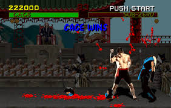

Video Game Ratings: Then and Now
Video games were not always subject to being rated by their explicit content. There was a time when parents had no official way of knowing what they were exposing their children to when purchasing a game. Before the establishment of the ESRB rating system, one could assume a game as that would be rated M nowadays to have the same type of content as a game for kids. There was no way to tell and therefore consumers had to learn on their own which games were kid-friendly or not so much.
1994, Origin
On September of 1993, Mortal Kombat was released for purchase to be played on home consoles. (It had been previously available to play on arcade systems) Mortal Kombat was the game that triggered the creation of the ESRB rating system.
A congressional hearing in December 1993, lead by Senators Joe Liberman and Herb Kohl, was held to discuss growing concerns about the video game industry. The argument was that the industry had been marketing violent video games to minors. These hearings were a response to the growing popularity of Mortal Kombat. Mortal Kombat is a fighting game that features blood and gore, especially during "fatality" moves which would usually depict some form of dismemberment or decapitation of the character on the receiving end. It was argued that violent games were "training early killers".
The two major video game manufacturers that distributed Mortal Kombat were Sega and Nintendo.
Sega had their own internal rating system, while Nintendo had nothing of the sort.
On February 3, 1994, Liberman proposed the Video Game Ratings Act of 1994. This act would extablish an
industry-wide, federal ratings system if the industry would not create one of its own. The bill didn't pass committee.
the major gamemakers in competition eventually agreed to come up with a solution. This solution was the creation of
the Interactive Entertainment Digital Software Organization. (now known as the Entertainment Software Association)
The ISDA was created to be an umbrella organization for all video game manufacturers. It was under the ISDA
that the Entertainment Software Ratings Board (ESRB) was founded. Congress would approve and finalize the proposal,
and the ESRB began to rate games September 1, 1994.

The original ratings system created by the ESRB.
Click Here if you would like to learn more about history of video game ratings.
Back to top